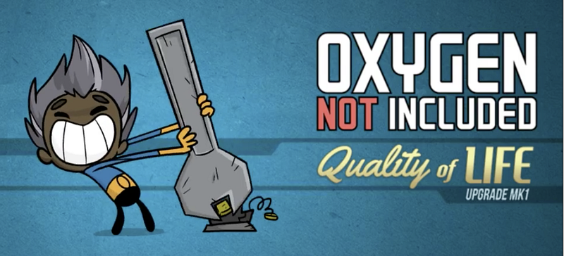
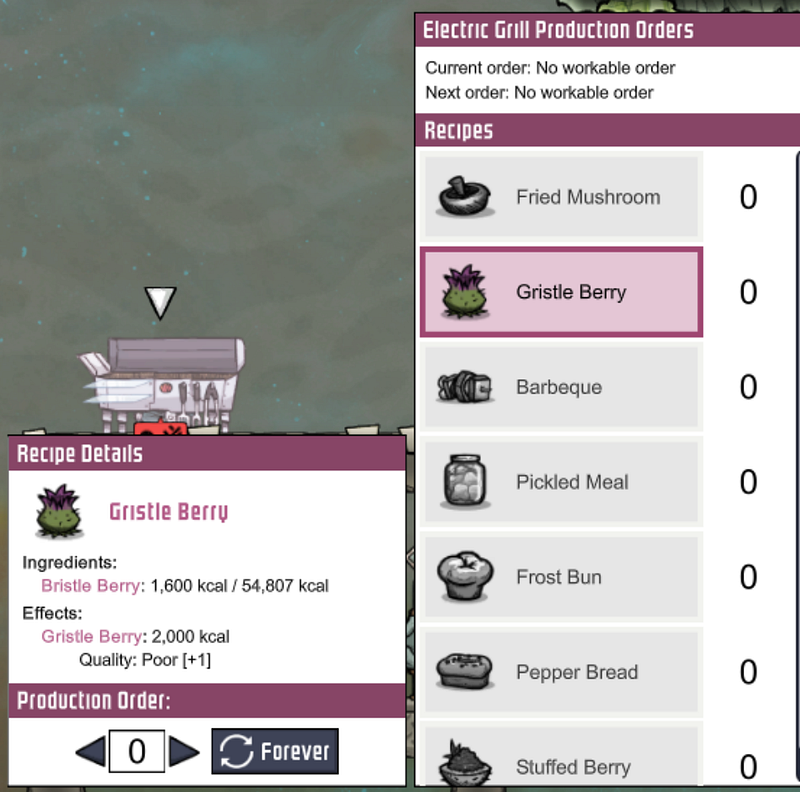
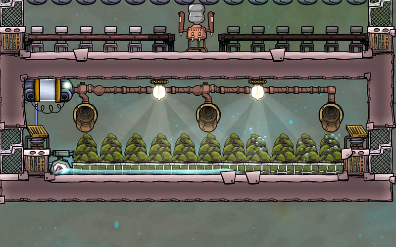
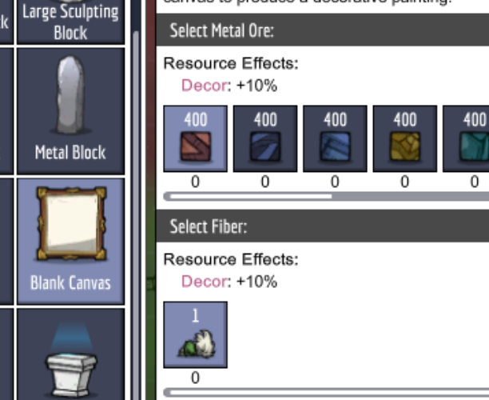
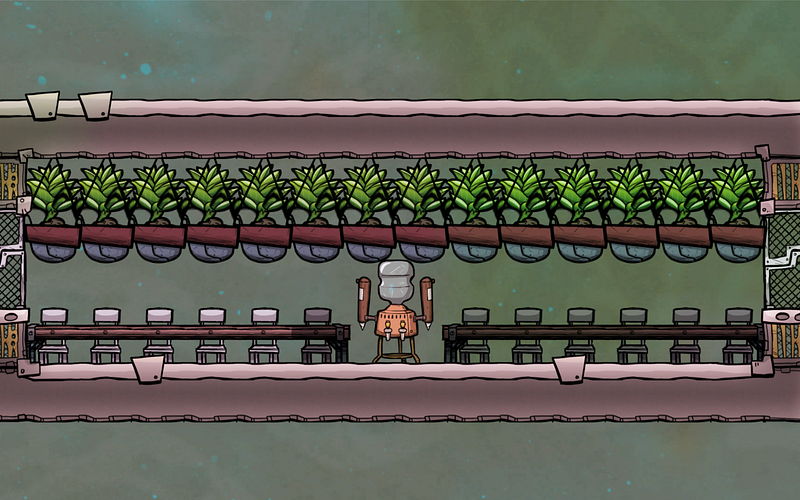
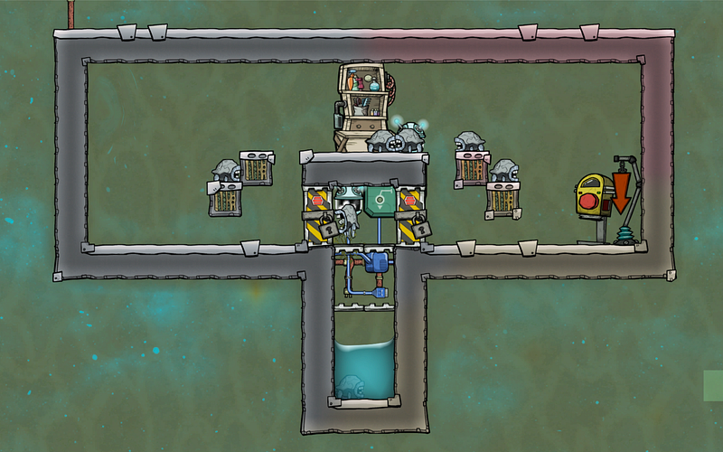

QoLアップグレードMk1からの変更点
QoLアップグレードMk1からの変更点

2018/12/14にQoLアップグレードMk1が正式リリースされ、様々な細かい仕様が変わった。βブランチから合わせて70時間くらいプレイしたのでこれまでOxygen Not Includedをプレイしていた人達向けに気づいた変更点をまとめる。
電気グリル、岩石粉砕器、精錬機等のキューイング
これらの施設で複数のアイテムを生成するのに、いちいち複数個同じ施設を作る必要がなくなった。
例えば電気グリルで何個か作りたいものと作りたい個数を入れておけば、原材料が手に入った段階でそれらを順番に作ってくれる。今見てる限りではそれぞれの作成物に対して優先順位はつけられない。

電解機の温度
電解機はQoLアップグレードから大きく温度まわりの仕様が変わった。
20℃くらいの水を送っていても酸素を生成していると本体が60℃くらいになり、確実に40℃以上の酸素が出てくるようになった。
これはつまり、以前の記事で紹介した「序盤の進め方」で書いたように最初のうちに酸素供給装置を作る、ということが事実上できなくなった、ということである。
40℃の酸素はなんとか耐えられても、60℃の施設が基地の中心部にあると、キチンと断熱ないし冷却しないと一瞬で基地が煮えてしまう。
テラリウムの有効活用
酸素供給装置が作りにくくなったと同時に、テラリウムの効率がよくなった気がする。以前のデータを持っていないのでなんとも言えないのだが、なんとなく。
テラリウムそのものに自動的に水をかけ（これは以前からできた。勝手に水を吸収してくれる）、汚染水を人力で抽出したのち、その汚染水を回収しないで放置する。
さらにそのまわりに脱臭機を置いておくことによって、テラリウムからの酸素と、汚染水から発生する酸素を変換して得られる酸素を供給できる。さらにライトをあてれば10％の効率アップにもなる。

ゲーム序盤〜中盤は正直これだけでいける気がする。
芸術家の作成物
QoLアップグレード以前では「見習い」レベルでも、複製人間の資質によって、最高グレードの装飾品が作成されていた。これがQoLアップグレードで廃止となり、「マスター」にならないと最高グレードの装飾品が作成されなくなった。
これまでゲーム序盤で簡単に装飾値をあげて士気を高めることが可能だったが、これで地道に複製人間のレベルを上げていく必要がでてきた。
ストレス値があがりにくくなった？
感覚値だけど、以前は装飾品を沢山置かないとストレス値がグングンあがっていった。しかしQoLアップグレードからは若干ストレスの上がり方がやさしくなった気がする。
装飾品を作るのが難しくなったからかもしれない。もしくは自分が上手になったせいか…
キャンバスのレシピ
絵画用キャンバスのレシピがリードファイバー＋金属鉱物になった。リードファイバーはティンブルリードか、ドレコから得るため、最低限見習い坑夫職業を得ないとそれらが得られるバイオームに行く事ができない。

エクソスーツのレシピ
エクソスーツのレシピにリードファイバー＋銅が必要となった。ゲーム中盤以降のために銅鉱石を残しておかないと詰む。
銅を精製しないほうがいい？
…というわけで、エクソスーツに銅鉱石が必要になった。鉄鉱石とかではない。銅鉱石オンリーだ。銅鉱石は初期バイオームにしか存在しないので、いい気になって銅鉱石を全部銅に精製してしまうと後でエクソスーツを作れない状況になってしまう。辛い。
自分は最初はどうしても銅鉱石で作らざるを得ない電線やドアを後から全部解体して鉄や金で作り直して銅を確保してる。
装飾のための植物
QoLアップグレードから装飾用の植物がたくさん増えた。観葉植物用のポットを作成して植え替えることができる。これらはゲーム序盤〜中盤において、芸術家にへたっぴな作品を作らせるよりよっぽど効率がよい。
特に大ホールを序盤に作るにはポットをずらっと並べるだけでなんとかなる。

生物の個体数センサー
QoLアップグレードから厩舎内にいる生物の数を感知できるセンサーができた。これを使うと、一定の数以上に増えた生物を逃がしたり殺したりできる。
例えば以下の部屋では、部屋を二つにわけて、外側の部屋は8匹以上のハッチがいた場合、真ん中の部屋に通じるドアが開くようになってる。中の部屋では一匹でもハッチが入ってきたら、外側のドアを閉じて、下のドアがあくようになっている。

下の部屋には水が溜まっており、ここに落ちたハッチはそのうち溺死する。これを取り除くための掃除機をつけておけば、肉が勝手に冷蔵庫に送られてくるようになる。
なお、落とし床にあたるドアは縦に置かないといけない。横にすると何故かハッチが落ちていかない。
バグ
複製人間が突然動かなくなるバグがある。動けないので、酸素のないところでこれが発生すると、そのうち死亡する。が、死んでいるのにスプライトは生きてるままで足踏みした状態で生きてるように見えるし、ベッドのアサインは解かれない。怖い。